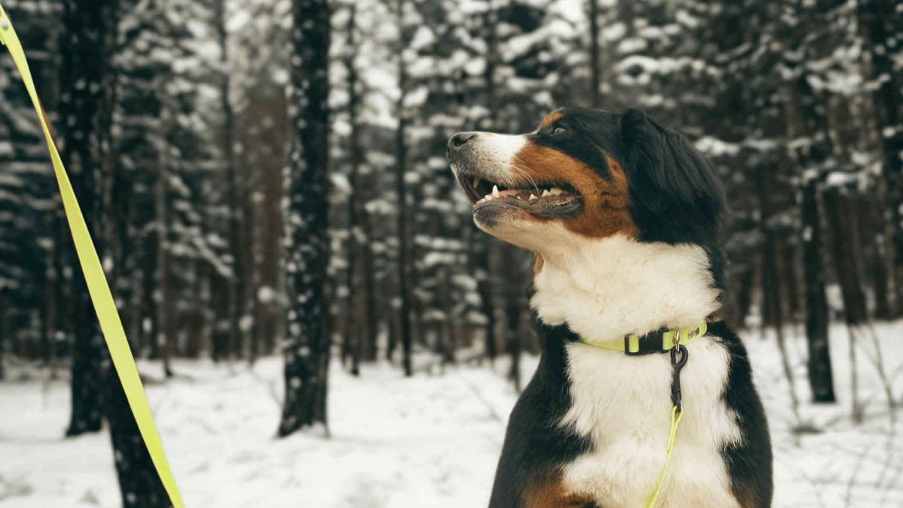
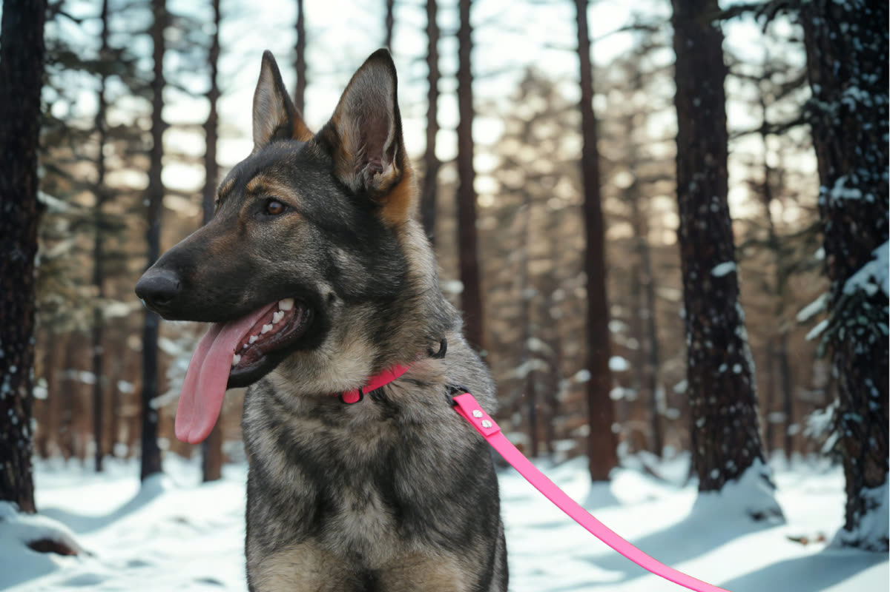

雪深い土地で暮らす中で、
私たちは犬と"共に生きる"という感覚を自然と学んできました。
雪道を駆ける姿。
冷たい風の中でも、真っ直ぐにこちらを見る目。
言葉はなくても伝わる信頼関係。
冷たい風の中でも、真っ直ぐにこちらを見る目。
言葉はなくても伝わる信頼関係。

愛犬との時間の中で感じたのは、
犬用品は「可愛さ」だけでは足りないということでした。
本当に必要なのは、
— STRENGTH — 過酷な環境でも使える強さ。
— UTILITY — 毎日使っても壊れない実用性。
— BOND — そして、ハンドラーと犬の時間をより深くする絆であること。
— STRENGTH — 過酷な環境でも使える強さ。
— UTILITY — 毎日使っても壊れない実用性。
— BOND — そして、ハンドラーと犬の時間をより深くする絆であること。

だから私たちは、
雪国という環境から学んだ"本物志向"を形にし、
デザインだけではなく、耐久性・機能性・存在感にこだわった犬用品を作り始めました。
犬は家族であり、相棒であり、
人生を共に歩く存在。
人生を共に歩く存在。
White Snow Paws は、
そんな想いから生まれたブランドです。
WHITE SNOW PAWS
NIIGATA · TOKAMACHI